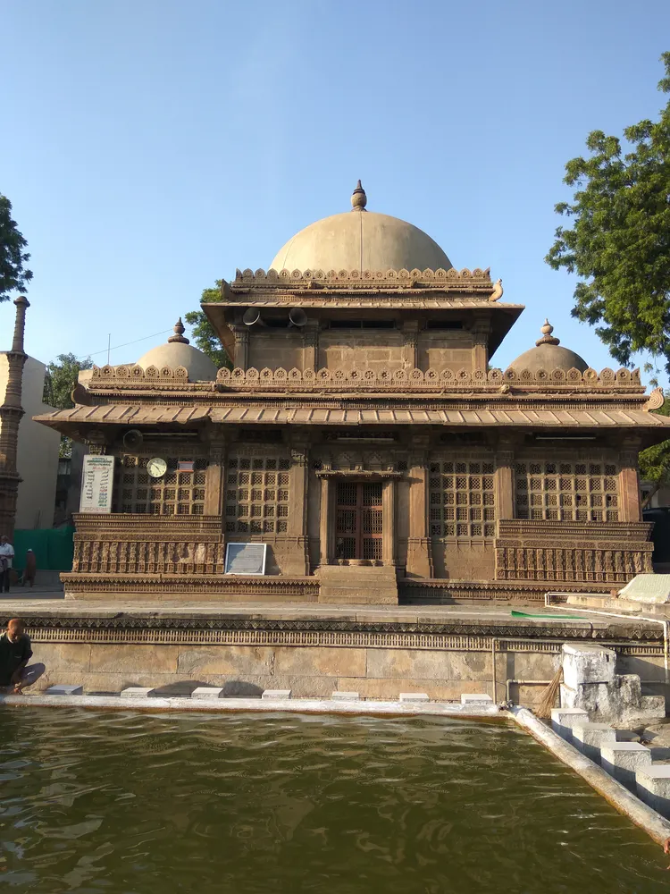

Rani Sipri’s Mosque: A Closer Look at Ahmedabad’s Carved Stonework

Look at an ensemble, not just a familiar name
The municipal heritage portal places Rani Sipri’s mosque and tomb near Astodia Gate and dates the mosque to 1514, commissioned by Queen Subha Rai, also known as Rani Sipri or Rani Asni. It also records the name Masjid-e-Nagina. These names can appear differently on maps and captions, so match the location and building rather than assuming that every spelling refers to a separate attraction. Begin by identifying the mosque and mausoleum as related but distinct parts of the ensemble.
Choose a whole, an edge and a detail
First notice how the main forms sit together. Then follow an edge: a row of supports, the outline of a screen or the transition between open and enclosed space. Finally, choose one carved detail to study. The municipal description highlights the jalis, the pillared sanctuary and the carved minaret. Those are useful reference points, not a demand to photograph everything. Ask how a repeated shape changes when viewed from farther away, and separate what is visible from an explanation that needs a guide or historical source.
A screen is more than a flat pattern
Where access permits, compare a jali from a broad view and from a position where you can see its depth. Look at the relationship between the stone and the openings, then at the light beyond it. Do not lean on the screen or touch it to test a theory about the carving. If a surface appears differently in two photographs, lighting and angle may account for the change; avoid treating that difference as proof that the building has been altered. Record the conditions of your own observation instead.
Plan around the street and the place of worship
Save a precise location and arrange your approach before travelling. A nearby map pin does not establish a comfortable stopping point for a vehicle or a safe place for a group to gather. Confirm current visitor arrangements, clothing expectations, permitted areas and photography rules locally. Worship and circulation take priority over a sightseeing schedule. If you cannot enter a particular area, adapt the visit rather than using an old online image to challenge the restriction. Ask about the actual route if steps or walking surfaces matter to your group.
Build a short architectural comparison
After the visit, compare one observed feature with a sourced image of another Ahmedabad landmark, such as Sidi Saiyyed Mosque or Jama Masjid. Ask a narrow question: how does each building frame an opening, repeat a support or use a screen? A comparison is not evidence that two details have the same meaning or maker. Keep your own description separate from the municipal record and avoid presenting a dramatic local legend as established history. This researched introduction does not claim a recent inspection, confirm opening hours or provide a current entry-price guarantee.